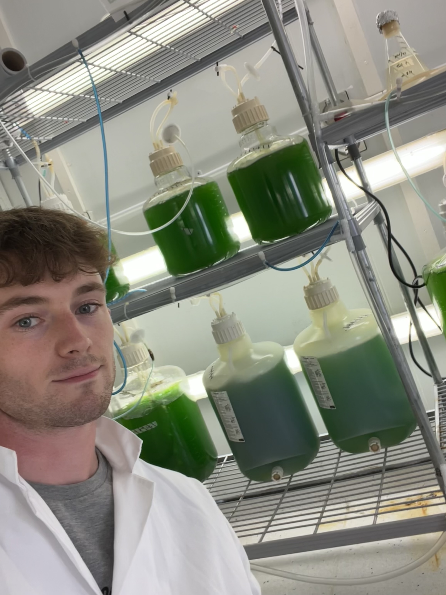
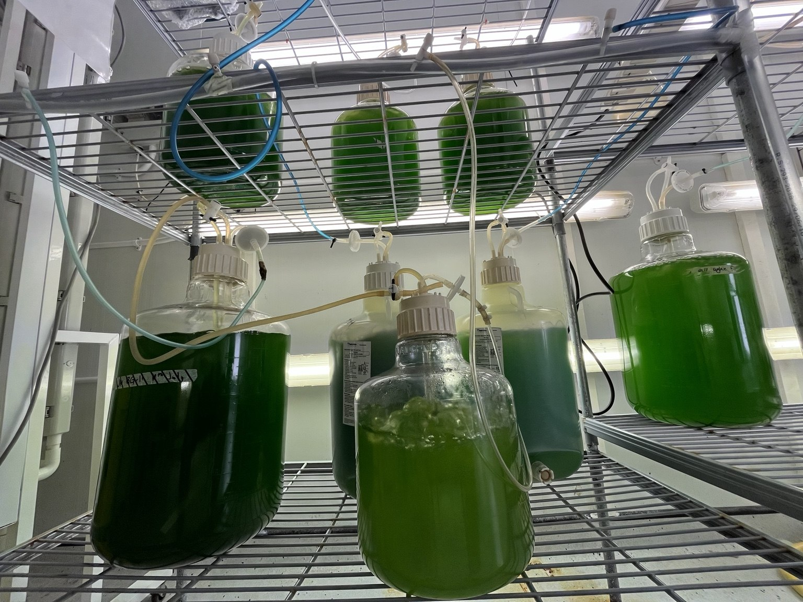
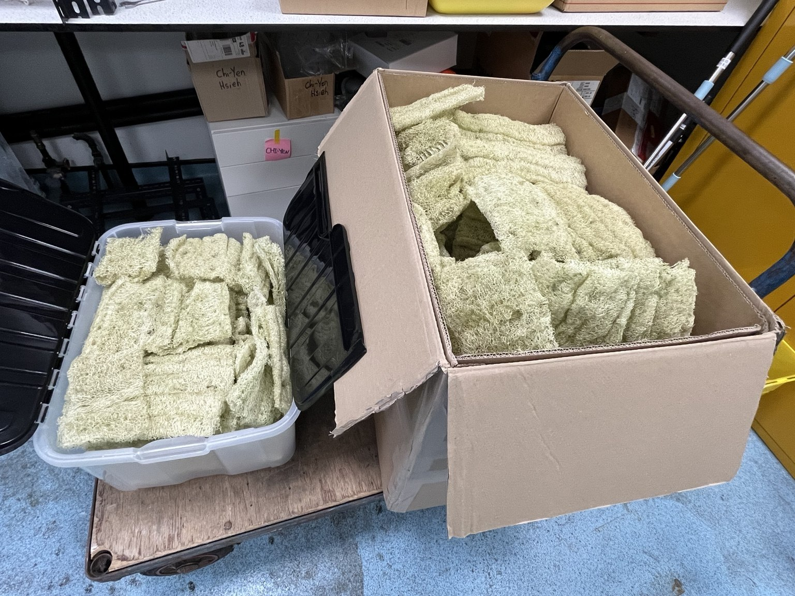
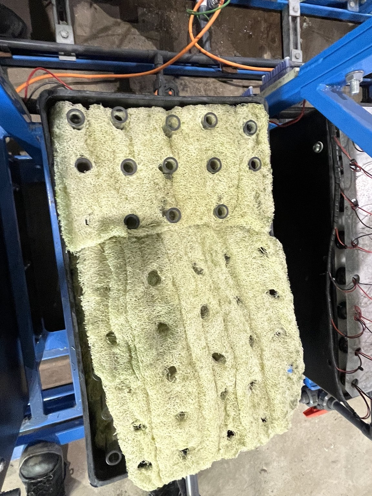
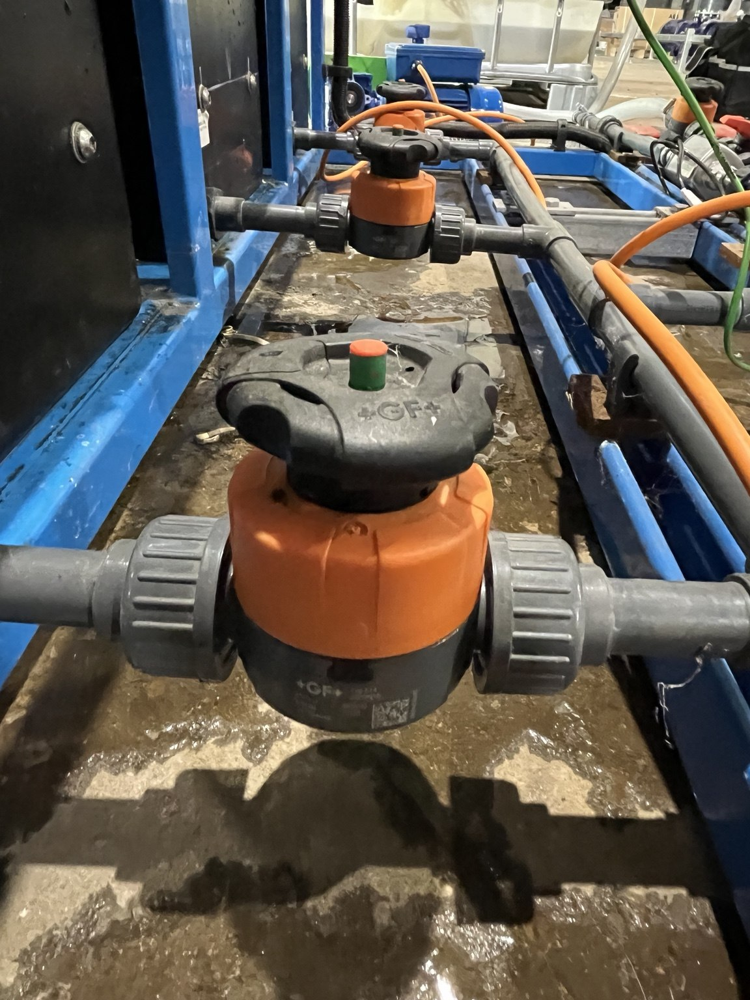
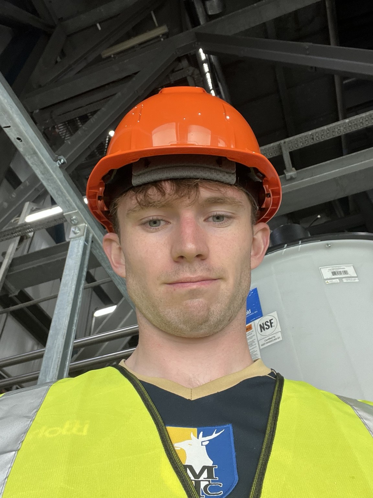

Engineering projects
My BEng in Chemical Engineering at Newcastle University gave me a foundation in chemistry, thermodynamics, fluid dynamics, reactor engineering, process control, product engineering and plant design. I also developed computing skills through coding and Excel work. Across design assignments, I learned to check calculations, document assumptions and consider safety at every stage, from piping and instrumentation to HAZOP and process economics.
My MSc in Sustainable Chemical Engineering built on this foundation with a focus on sustainable technologies and biological approaches. I explored how history, politics, behaviour and national policies shape business decisions, alongside environmental management systems, ISO standards, environmental auditing and stakeholder needs.
MSc dissertation · Water & biotechnology
Microalgae for wastewater treatment
Research in collaboration with Northumbrian Water.
Dissertation result pending
My dissertation investigated immobilised microalgae biocomposites for nutrient removal from treated wastewater. The practical work combined algae cultivation, preparation of loofah-supported biocomposites and the setup of a pilot reactor.
My practical work
I spent the summer cultivating Chlorella vulgaris, preparing BG-11 growth media and stock solutions, transferring cultures into autoclaved containers, and coating loofah to prepare biocomposites. My site work included reactor cleaning, recommissioning and flow balancing for wastewater trials.
I also gained experience using LCK cuvette test kits to measure nutrients in water samples. Comparing samples helped me assess nutrient-removal performance, while recognising the importance of controls and variation in wastewater conditions.
Skills I developed
- Preparation of growth media and stock solutions, accurate measurement and careful culture handling.
- Algae cultivation, culture transfer and preparation of loofah-supported biocomposites.
- Reactor cleaning, recommissioning, flow balancing and practical troubleshooting.
- Nutrient testing with LCK cuvette kits and comparison of water samples.
- Experimental planning, control selection and interpreting variable wastewater data.
- Working with an industrial partner and communicating practical requirements.
What I took from it
Preparing consistent supports, keeping cultures healthy and organising sampling developed my practical laboratory and site skills. I also learned to recognise the limits of the evidence when interpreting variable wastewater data. The experience strengthened my interest in water and wastewater engineering.
Published background: Loofah-based microalgae and cyanobacteria biocomposites for intensifying carbon dioxide capture (In-na et al., 2020), with Gary Caldwell and Jonathan Lee.
Open-access review: Immobilising microalgae and cyanobacteria as biocomposites (Caldwell et al., 2021), including Jonathan Lee.
My practical experience






MSc group design project
Biomass pyrolysis & cement decarbonisation
Connecting process design with environmental and economic assessment.
Project mark: 77.5%
In this group design project, we proposed a sawdust pyrolysis system integrated with cement production. The aim was to recover useful fuels and biochar while reducing demand for fossil fuels and clinker.
How the proposed system would work
Sawdust would pass through solar-assisted drying and a polishing dryer before entering an auger reactor operating at around 500°C without oxygen. The resulting biochar would be recovered, while vapours and gases would pass through filtration, cooling and cleaning to recover bio-oil and syngas.
Syngas would supply process heat, with recovered heat supporting drying. Bio-oil could supplement internal heating or replace some cement kiln fuel, while biochar was assessed as a potential partial cement replacement to reduce clinker demand. Our mass and energy balances, cost modelling and sustainability assessment examined how these parts would work together, including sensitivity to drying performance and policy support.
Skills I developed
- Process design, mass and energy balances, and heat integration.
- Economic modelling and sensitivity to design assumptions.
- Environmental, social and safety assessment alongside technical performance.
BEng group design project
Post-combustion carbon capture
Developing a foundation in process design and safety.
Project mark: 77%
In this undergraduate group project, we developed a proposed post-combustion carbon capture plant for an existing combined-cycle gas turbine power station. An amine solvent would absorb CO₂ from the flue gas, then be regenerated for reuse. The recovered CO₂ would be purified and compressed for onward transport.
What the design involved
The report connected equipment and pipe sizing with plant layout, piping and instrumentation diagrams, control loops, start-up and shutdown procedures, and HAZOP. It also assessed heat recovery, capital and operating costs, and wider sustainability considerations.
Skills I developed
- Understanding absorption, solvent regeneration and CO₂ compression.
- Connecting equipment, piping, instrumentation and plant layout.
- HAZOP, hazard analysis and operational safety.
- Considering energy integration, costs and sustainability together.
The project developed my understanding of how detailed design and safety checks fit into a complete plant, and how capture performance must be considered alongside energy demand and operating costs.
MSc electrochemical assignment
Community heat, power & hydrogen storage
Designing an energy system around seasonal demand and storage.
Assignment mark: 75%
In this assignment, I developed a preliminary heat and power system for a model community of 2,000 people, using a coastal Norwegian location as the design scenario. The work connected offshore wind, water treatment, electrolysis and energy storage with seasonal heating demand and electricity supply.
How the proposed system would work
Wind-generated electricity would power seawater desalination and purification, followed by PEM electrolysis to produce hydrogen. Hydrogen would be compressed and stored in lined rock caverns, then supplied to boilers for winter heating and PEM fuel cells for backup electricity during low-wind periods. I also modelled a direct methanol fuel cell system for shorter backup requirements.
Skills I developed
- Estimating heat and electricity demand, and sizing generation and storage.
- Electrolysis, compression and fuel cell calculations, including efficiency and voltage losses.
- Process flow diagrams, system integration and preliminary lifecycle cost comparison.
The assignment helped me assess the trade-offs between energy conversion losses, storage duration and demand. The proposed storage location and system performance remain design assumptions that would need further site and operational assessment.
MSc green chemistry assignment
Polylactic acid from corn starch
Assessing a bio-based polymer through process design and sustainability.
Original assignment mark: 83.2%
As part of my MSc Green Chemistry work, I assessed the production of polylactic acid (PLA) from corn starch. My case study follows the process from starch hydrolysis and lactic acid fermentation through purification, lactide formation and polymerisation.
My assessment uses material and energy balances to examine conversion, product recovery and thermal demand, with particular attention to the energy required for purification. I also considered heat integration, separation options and how feedstock choice and end-of-life infrastructure affect sustainability.
Continuing to learn
More work to share
I’ll continue expanding this page with project photographs and examples of my work as I develop the website. Alongside my job and fundraising, I want to keep learning new skills and exploring the engineering behind the environmental issues that matter to me.
Browse my independent research